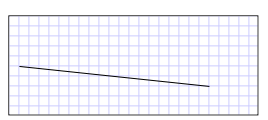

Практическое руководство. Создание LineSegment в PathGeometry
В этом примере показано, как создать сегмент линии. Чтобы создать сегмент линии, используйте PathGeometry, PathFigure, и LineSegment классы.
Пример
В следующем примере рисуется LineSegment из (10, 50) к (200, 70). На следующем рисунке показан итоговый LineSegment; для показа системы координат добавлена фоновая сетка.
 LineSegment, соединяющей (10,50) к (200,70)
[xaml]
В XAML можно использовать синтаксис атрибута для описания пути.
<Path Stroke="Black" StrokeThickness="1"
Data="M 10,50 L 200,70" />
[xaml]
(Обратите внимание, что этот синтаксис атрибута фактически создает StreamGeometry, облегченные версии PathGeometry. Дополнительные сведения см. на странице Синтаксис разметки пути.)
В XAML сегмент линии можно также начертить с использованием синтаксиса элемента объекта. Следующий пример эквивалентен предыдущему примеру XAML.
<Path Stroke="Black" StrokeThickness="1">
<Path.Data>
<PathGeometry>
<PathFigure StartPoint="10,50">
<LineSegment Point="200,70" />
</PathFigure>
</PathGeometry>
</Path.Data>
</Path>
PathFigure myPathFigure = new PathFigure();
myPathFigure.StartPoint = new Point(10, 50);
LineSegment myLineSegment = new LineSegment();
myLineSegment.Point = new Point(200, 70);
PathSegmentCollection myPathSegmentCollection = new PathSegmentCollection();
myPathSegmentCollection.Add(myLineSegment);
myPathFigure.Segments = myPathSegmentCollection;
PathFigureCollection myPathFigureCollection = new PathFigureCollection();
myPathFigureCollection.Add(myPathFigure);
PathGeometry myPathGeometry = new PathGeometry();
myPathGeometry.Figures = myPathFigureCollection;
Path myPath = new Path();
myPath.Stroke = Brushes.Black;
myPath.StrokeThickness = 1;
myPath.Data = myPathGeometry;
Dim myPathFigure As New PathFigure()
myPathFigure.StartPoint = New Point(10, 50)
Dim myLineSegment As New LineSegment()
myLineSegment.Point = New Point(200, 70)
Dim myPathSegmentCollection As New PathSegmentCollection()
myPathSegmentCollection.Add(myLineSegment)
myPathFigure.Segments = myPathSegmentCollection
Dim myPathFigureCollection As New PathFigureCollection()
myPathFigureCollection.Add(myPathFigure)
Dim myPathGeometry As New PathGeometry()
myPathGeometry.Figures = myPathFigureCollection
Dim myPath As New Path()
myPath.Stroke = Brushes.Black
myPath.StrokeThickness = 1
myPath.Data = myPathGeometry
Этот пример является частью большего примера; полный пример см. в разделе Пример геометрических объектов.